FIAP · Global Solution 2026.2 · CitizenTech · Engenharia de Software 4ES
Secure DevOps Tools & Cloud Computing · Prof. Gabriel Henrique Boyczuk Arcanjo
| Integrante (nome completo) | RM |
|---|---|
| Guilherme Rocha Bianchini | RM97974 |
| Nikolas Rodrigues Moura dos Santos | RM551566 |
| Thiago Jardim de Oliveira | RM551624 |
| Rodrigo Brasileiro | RM98952 |
| Link | Endereço |
|---|---|
| MVP publicado (URL pública) | https://caminholivre-gs.azurewebsites.net |
| Repositório público | https://github.com/santos-nikolas/caminho-livre |
| Pipeline (GitHub Actions) | https://github.com/santos-nikolas/caminho-livre/actions |
| Nome do produto | Caminho Livre |
|---|---|
| Cidadão e território | Pedestres com deficiência ou mobilidade reduzida, idosos e cuidadores. O piloto cobre o entorno do campus FIAP Paulista (São Paulo, SP). |
| Problema, em uma frase | Rampas bloqueadas, calçadas obstruídas e travessias com barreira são relatadas de forma dispersa e ninguém acompanha se foram resolvidas. |
| Proposta de valor | O cidadão registra a barreira no mapa e acompanha o status. O gestor do local recebe uma fila auditável para revisar e encerrar cada relato. |
| Arquitetura: componentes | Página web (HTML + Leaflet) e API FastAPI num container, publicado no Azure App Service (Linux, plano F1) criado por Terraform. Banco SQLite no armazenamento persistente do App Service. CI/CD com GitHub Actions e deploy por OIDC. Prometheus, Grafana e Alertmanager. |
| Fontes de dados | OpenStreetMap (mapa base e malha viária) e relatos do próprio MVP. Os pontos de demonstração são sintéticos e vêm identificados na tela. |
| Modelos de IA utilizados | Detector de obstáculos customizado (YOLO), do componente Applied Computer Vision. Fica fora do escopo desta entrega. |
| URL do MVP e repositório | Ver tabela de links acima. |
| Indicadores de impacto | Relatos recebidos e revisados, tempo até a primeira revisão e taxa de resolução confirmada. São indicadores de processo, não prova de melhoria física. |
| ODS conectados | ODS 10 (redução das desigualdades) e ODS 11 (cidades e comunidades sustentáveis). |
Fluxo: cada git push passa por 5 portões (testes, Gitleaks, Semgrep, Trivy IaC e Trivy imagem). Só a imagem aprovada na main é publicada no GHCR (tags :sha e :latest). O job deploy faz login na Azure por OIDC, com um token de curta duração e sem senha guardada. Em seguida, aponta o App Service para a imagem :sha do commit e só passa quando /health responde com esse SHA.
Por que PaaS (App Service) e não VM: a assinatura disponível para a equipe é a Azure para Estudantes Starter. Ela só permite os provedores Microsoft.Web, Microsoft.Sql e alguns de gestão; VM, rede virtual e Storage Account são negados pela própria assinatura (DisallowedProvider). O plano F1 do App Service é gratuito, roda o mesmo container do docker compose local e entrega HTTPS e patches do host pela plataforma. Em troca, ele tem limites: 60 min de CPU por dia, sem Always On e uma instância só (seção 10).
| Requisito | Como foi atendido | Arquivo |
|---|---|---|
| Enxuto | Multi-stage: o pip roda no estágio de build e só os pacotes instalados vão para a imagem python:3.12-slim. O banco usa o sqlite3 da biblioteca padrão, sem driver extra. .dockerignore exclui testes e cache. | app/Dockerfile |
| Usuário não-root | USER 10001. No compose: read_only, cap_drop: ALL, no-new-privileges e mem_limit 256m. O único ponto gravável é o volume do banco. | docker-compose.yml |
| Sem segredo na imagem | Os segredos só entram por variável de ambiente em runtime: .env local e app settings na Azure. O Trivy roda com --scanners secret na imagem a cada push. | workflow |
| Patches do SO na imagem | apt-get upgrade no estágio final. Foi uma correção exigida pelo Trivy (seção 4.3). | app/Dockerfile |
| Stack com docker compose | api (com o volume dados) e proxy (Caddy, HTTPS automático quando há domínio). O override local acrescenta o build. Em produção, a mesma imagem roda no App Service. | docker-compose.yml |
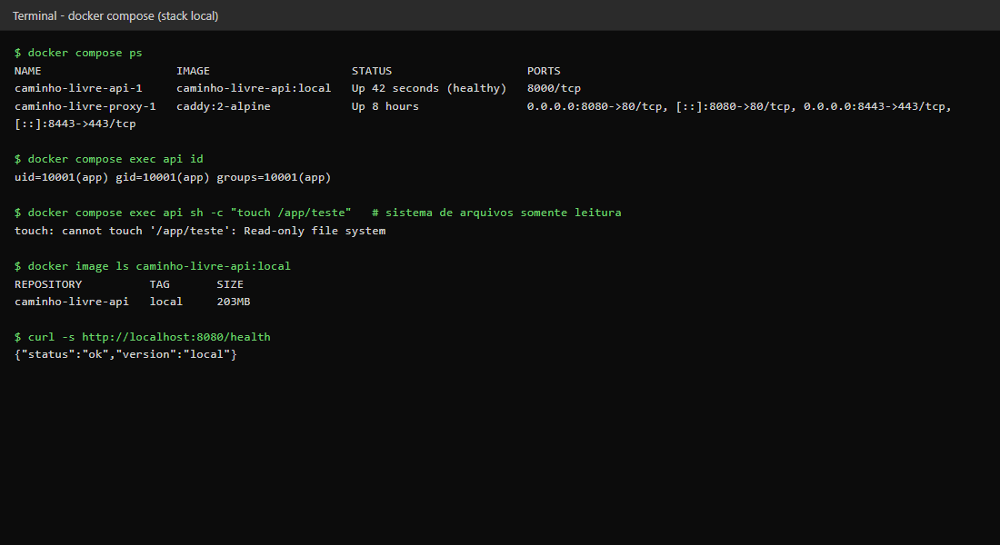
docker compose ps com a stack no ar e docker compose exec api id mostrando uid 10001 (não-root). A tentativa de gravar em /app falha porque o sistema de arquivos do container é somente leitura.| Requisito | Como foi atendido |
|---|---|
| Nuvem criada por código | infra/terraform/main.tf cria: resource group, plano App Service Linux F1 e web app de container (GHCR). Também cria a identidade de deploy no Entra ID (aplicação, service principal e credencial federada OIDC) e a atribuição de papel com menor privilégio. |
| State fora do repositório | Bloco cloud {}: o state fica no HCP Terraform, criptografado e versionado. A organização e o workspace vêm de variáveis de ambiente. O *.tfstate e o *.tfvars estão no .gitignore; o repositório só tem o terraform.tfvars.example. |
| Porta admin nunca 0.0.0.0/0 | No PaaS, a porta administrativa é o site SCM/Kudu (console, logs e deploy). A regra scm_ip_restriction aceita só o var.admin_cidr, e a ação padrão do SCM é Deny. A validation só aceita prefixos de /24 a /32, então 0.0.0.0/0 é recusado no plan. Não há SSH, e FTP e publicação por senha estão desligados. |
| Sem senha digitada | Token de admin e token de métricas vêm de random_password. O deploy usa OIDC: o GitHub não guarda senha nem chave da Azure, só IDs. |
$ terraform test run "bloqueia_admin_aberto_para_a_internet"... pass run "bloqueia_faixa_larga_no_admin"... pass run "infra_segura_com_ip_do_admin"... pass Success! 3 passed, 0 failed.
O terceiro teste confere, com providers simulados:
producao deste repositório;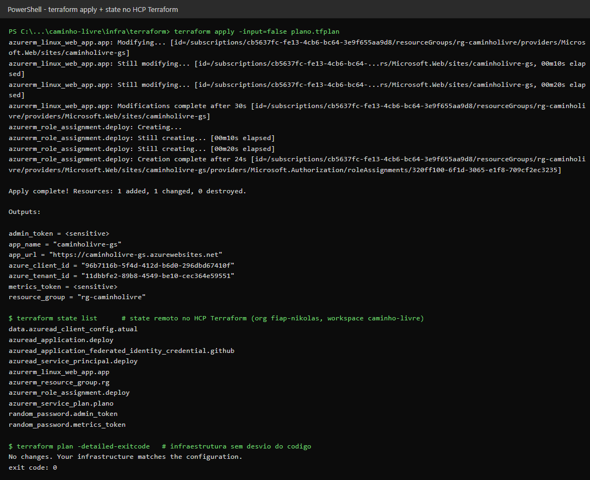
terraform apply concluído, com os outputs (os tokens aparecem como <sensitive>). Abaixo, os 10 recursos no state remoto e um plan sem mudanças, que mostra a nuvem igual ao código.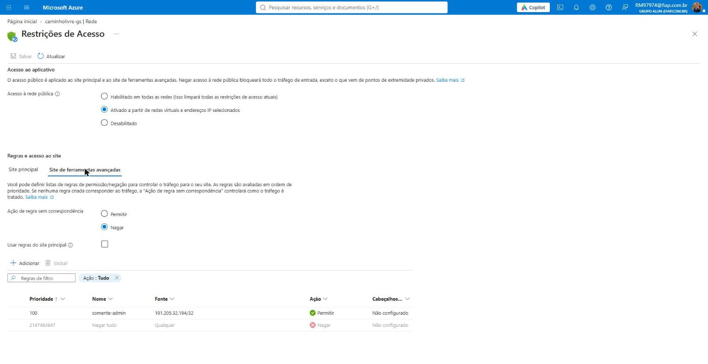
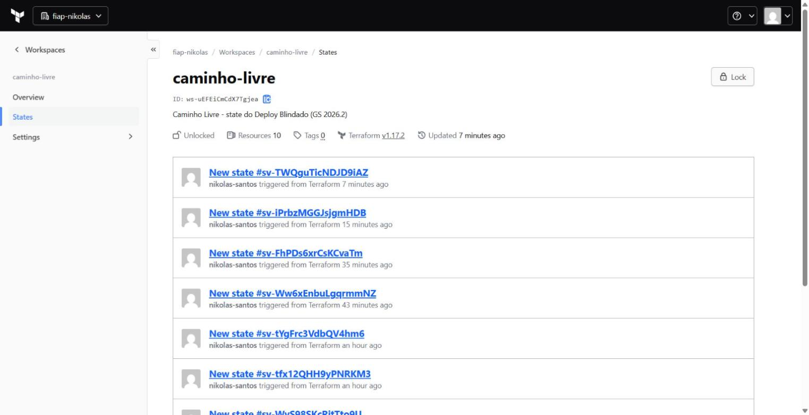
| Problema | Causa | Solução |
|---|---|---|
plan falhava ao registrar provedores | A assinatura Starter não permite registrar provedores de recurso. | resource_provider_registrations = "none". O único provedor usado, Microsoft.Web, já vem registrado. |
| 403 ao criar o service principal e a credencial OIDC | O tenant da FIAP não torna dono quem cria a aplicação, e uma aplicação sem dono não pode ser alterada. | owners explícito com o usuário que roda o Terraform, lido de azuread_client_config. |
Primeiro deploy recusado no login (AADSTS700213) | O GitHub passou a emitir o subject OIDC com os IDs imutáveis do dono e do repositório (santos-nikolas@126473396/caminho-livre@1454716396). | Credencial federada atualizada para esse formato. Ganho de segurança: um repositório recriado ou renomeado com o mesmo nome não herda o acesso de deploy. |
Conexões com a Azure cortadas no apply | A rota IPv6 da rede da equipe até a Azure derrubava as conexões: 9 de 12 testes falharam por IPv6, 0 de 12 por IPv4. | O apply rodou por um proxy local que só sai por IPv4. Cada nova tentativa do Terraform criava só o que faltava, sem duplicar recursos. |
Arquivo: .github/workflows/devsecops.yml. Roda em todo push, em qualquer branch.
| Job | Ferramenta | Bloqueia quando |
|---|---|---|
| Build e testes | pytest (API completa sobre SQLite temporário) | qualquer teste falha (fluxo cidadão/gestor, validação de território, 401 sem token, 404, LGPD) |
| Gitleaks | Gitleaks 8.28 (histórico completo) | algum segredo aparece em qualquer commit |
| Semgrep | p/default, p/python, p/dockerfile, p/secrets | algum achado aparece (--error) |
| Terraform + Trivy IaC | fmt, validate, test + trivy config | formatação, validação, teste de segurança ou misconfiguração HIGH/CRITICAL |
| Imagem + Trivy | trivy image --scanners vuln,secret | há CVE HIGH/CRITICAL com correção ou segredo na imagem |
| Deploy automático | azure/login (OIDC) + az webapp config container set, environment producao | o SHA não entra no ar em 10 min, ou /metrics responde sem token |
Segredos no GitHub Secrets:
AZURE_CLIENT_ID, AZURE_TENANT_ID e AZURE_SUBSCRIPTION_ID: só identificadores; quem autentica é o token OIDC de curta duração.METRICS_TOKEN: usado no smoke test autenticado.O push para o GHCR usa o GITHUB_TOKEN efêmero, com packages: write só no job de imagem. O id-token: write existe só no job de deploy, e o padrão do workflow é contents: read.
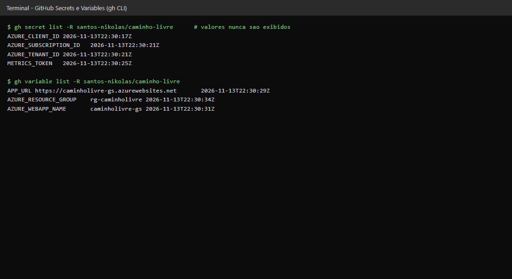
gh CLI. Os valores nunca são exibidos, só nomes e datas.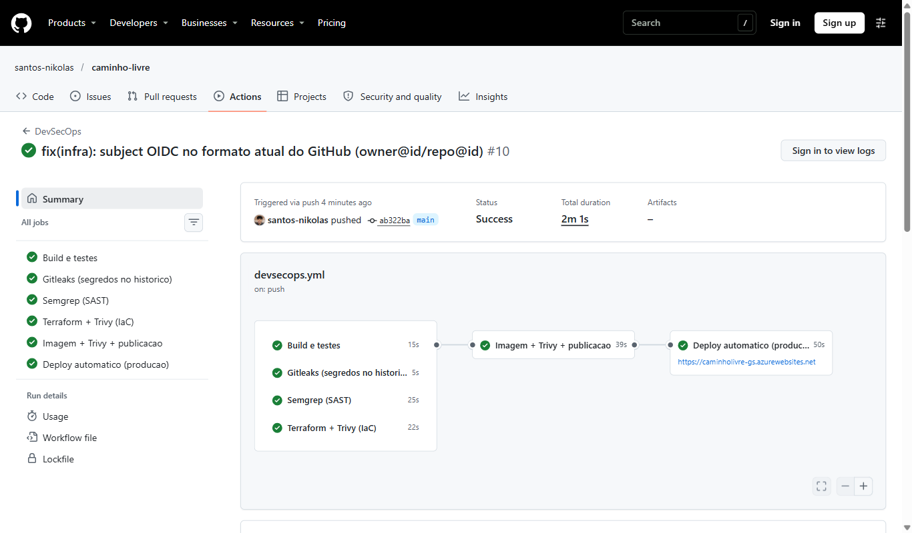
main com todos os jobs verdes, incluindo o deploy.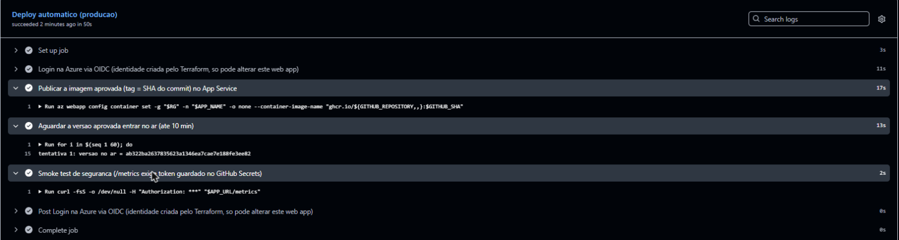
:SHA, o /health confirma a versão ab322ba… no ar e o smoke test usa o token mascarado (***).Caso real no desenvolvimento: na primeira varredura da imagem, o Trivy barrou o build com 2 vulnerabilidades HIGH no pacote zlib1g da imagem base Debian 13 (CVE-2026-85091, heap buffer overflow), já corrigidas na versão 1:1.3.dfsg+really1.3.1-1+deb13u1. A correção foi aplicar os patches do SO no Dockerfile (apt-get upgrade). Com isso a varredura passou a mostrar 0 HIGH/CRITICAL.
Demonstração no GitHub Actions: numa branch descartável foi commitado um segredo falso (DATABASE_PASSWORD = "...", gerado na hora), e o Gitleaks barrou o pipeline (execução barrada). Sem esse portão, a imagem não foi construída nem publicada. A correção foi remover o segredo do histórico com git reset + push --force, e não só apagar o arquivo, porque o Gitleaks varre todos os commits (execução corrigida). Num caso real, o segredo também seria rotacionado.
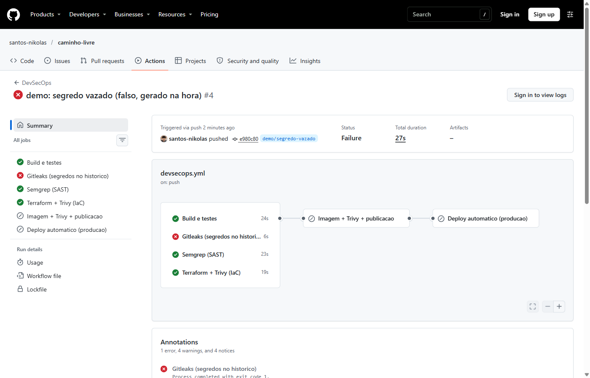
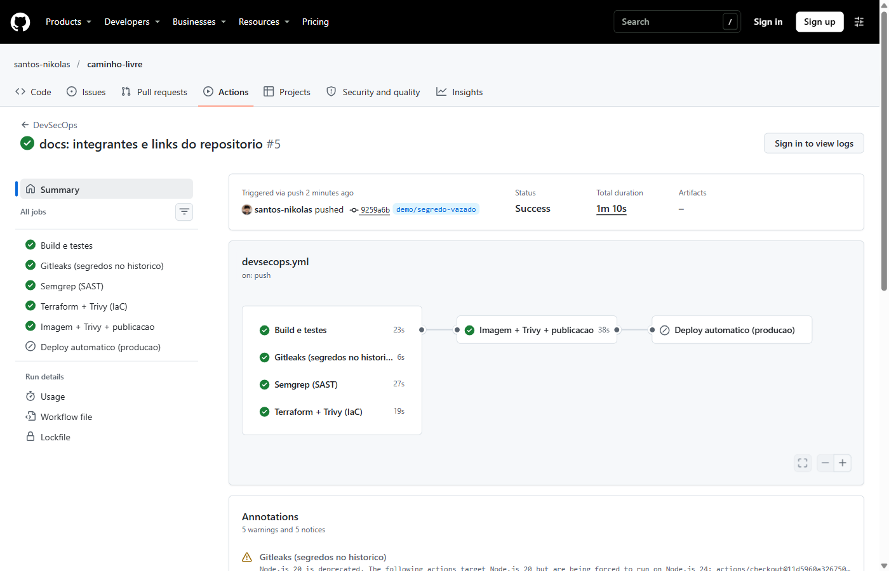
A API expõe /metrics (Prometheus) protegido por token Bearer. Prometheus, Grafana e Alertmanager rodam localmente e raspam o MVP publicado via HTTPS, como o enunciado permite. Os rótulos de rota usam o template (/api/admin/reports/{relato_id}), o que evita cardinalidade alta e IDs nas métricas.
| Sinal de ouro | Métrica / PromQL |
|---|---|
| Latência | histogram_quantile(0.95, sum by (le) (rate(http_request_duration_seconds_bucket[5m]))) (p50/p95/p99) |
| Tráfego | sum by (route) (rate(http_requests_total[1m])) |
| Erros | (sum(rate(http_requests_total{status=~"5.."}[5m])) or vector(0)) / sum(rate(http_requests_total[5m])) (mostra 0% quando não há erro) |
| Saturação | process_resident_memory_bytes, rate(process_cpu_seconds_total[1m]) (o F1 tem cota de CPU), http_requests_in_progress |
| Alerta | Condição | Severidade |
|---|---|---|
| CaminhoLivreFora | up == 0 por 1 min | critical |
| TaxaDeErrosAlta | > 5% de respostas 5xx por 1 min | critical |
| LatenciaP95Alta | p95 > 1 s por 5 min | warning |
| SaturacaoMemoria | > 200 MB por 5 min | warning |
Disparo do alerta com uma falha real (13/11/2026, horário de Brasília):
az webapp stop.CaminhoLivreFora foi para firing e chegou ao Alertmanager.az webapp start.O Alertmanager entrega no canal do Discord cujo webhook estiver em monitoring/secrets/discord_webhook, fora do Git. Não existe nenhum endpoint de "erro proposital" exposto em produção.
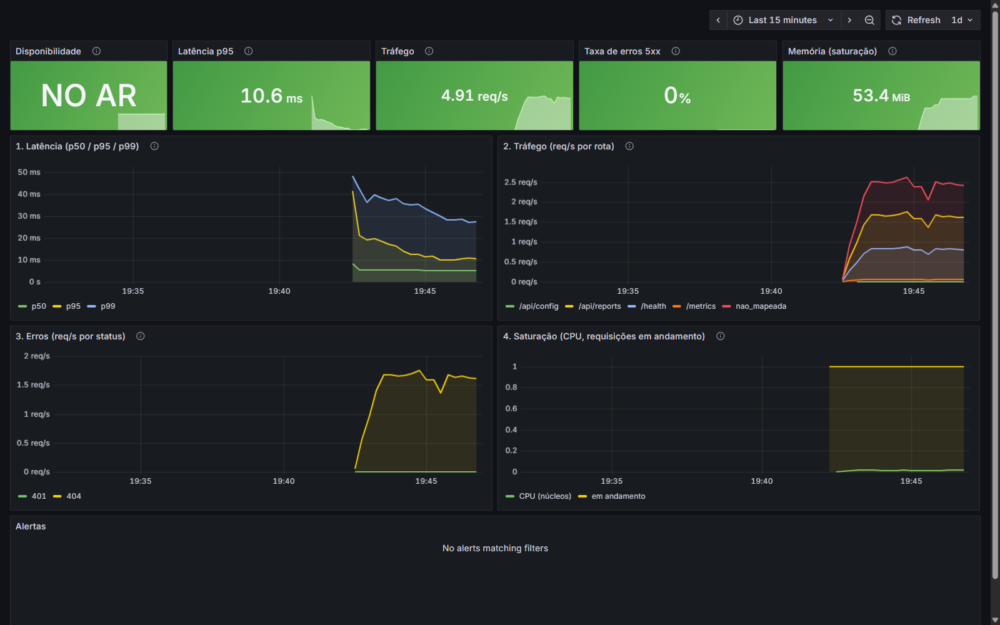
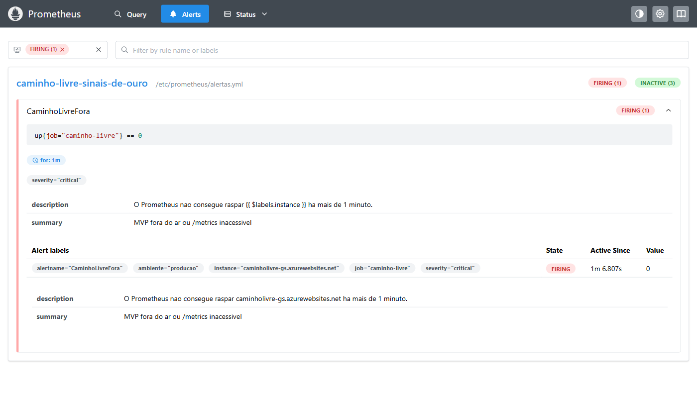
CaminhoLivreFora em firing no Prometheus durante a queda provocada, com a instância caminholivre-gs.azurewebsites.net e up = 0.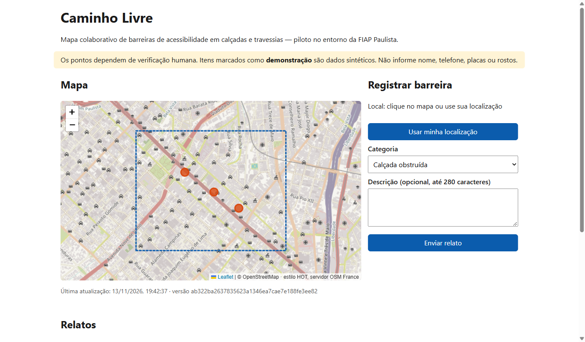
| Camada | Microsoft Azure | Equipe Caminho Livre |
|---|---|---|
| Física e virtualização | Datacenter, hardware, rede física, hipervisor, isolamento entre clientes | — |
| Rede e borda | Front-end do App Service, certificado TLS do *.azurewebsites.net, proteção básica contra DDoS | HTTPS obrigatório, TLS 1.2+, SCM só do IP do admin, FTP e publicação por senha desligados (Terraform) |
| SO e runtime do host | Patches do SO dos workers e do Docker do App Service | — |
| Container e dependências | — | Imagem base atualizada, CVEs (Trivy), usuário não-root, dependências fixadas |
| Aplicação | — | Código (testes, Semgrep), autenticação do gestor, CSP, validação de entrada |
| Identidade e segredos | Entra ID, emissão dos tokens OIDC, RBAC | Identidade de deploy com menor privilégio, tokens gerados pelo Terraform, GitHub Secrets, rotação |
| Armazenamento | Durabilidade e criptografia em repouso do /home do App Service | Backup do arquivo SQLite (pendente, ver riscos) |
| Dados e LGPD | Região escolhida (brazilsouth) e certificações da plataforma | Minimização, sanitização, retenção e resposta a titulares (controladora) |
| Monitoramento | Saúde da plataforma | Métricas da aplicação, alertas e resposta a incidente |
| Dado | É pessoal? | Onde fica | Proteção |
|---|---|---|---|
| Conta de cidadão | — | Não existe | Minimização: o piloto não tem cadastro |
| Coordenada do relato | Pode indicar onde a pessoa estava | SQLite em /home/data/caminholivre.db, armazenamento do App Service em brazilsouth | Arredondada para 4 casas (~11 m) antes de gravar |
| Descrição livre | Pode conter contatos | Mesmo arquivo (descricao_sanitizada) | E-mail, telefone e CPF trocados por [removido] antes de gravar (testado) |
| Endereço IP do visitante | Sim | Logs HTTP do App Service (brazilsouth) | Retenção de 7 dias / 35 MB, só para diagnóstico; a API não grava IP nem corpo de requisição e as métricas não têm IP |
| Fotos | Podem ter rostos/placas | Não são armazenadas neste MVP | O módulo de Visão processa sob demanda (fora desta entrega) |
| Segredos (tokens) | Não pessoais, mas sensíveis | App settings do App Service, state no HCP Terraform, GitHub Secrets | Nunca no Git (Gitleaks); acesso restrito por RBAC e por conta |
Em trânsito, tudo passa por HTTPS (TLS 1.2+, certificado gerenciado pela Azure). Em repouso, o armazenamento do App Service é criptografado pela plataforma. Os dados pessoais ficam no Brasil, na região brazilsouth. O state do Terraform (no HCP Terraform) guarda os tokens da aplicação, mas nenhum dado de cidadão.
Fonte: Azure Retail Prices API (preços públicos pay-as-you-go em USD, região brazilsouth), consultada em 13/11/2026. O mês considerado tem 730 h.
| Recurso | Preço unitário | USD/mês |
|---|---|---|
| App Service Plan F1 (Linux) | US$ 0,00/h | 0,00 |
| Armazenamento do App Service (1 GB incluso no F1) | incluso | 0,00 |
| Entra ID (aplicação de deploy) | incluso | 0,00 |
| HCP Terraform (plano Free) | — | 0,00 |
| GitHub Actions e GHCR (repositório público) | — | 0,00 |
| Prometheus/Grafana/Alertmanager (local) | — | 0,00 |
| Total do piloto | 0,00 | |
| Próximo degrau: App Service Plan B1 (Linux), com Always On e sem cota diária de CPU | US$ 0,02/h | ≈ 14,60 |
O piloto cabe inteiro em planos gratuitos. Para sair do piloto, o próximo passo é o B1 (≈ US$ 14,60/mês) e, com mais de uma instância, um banco gerenciado no lugar do SQLite. Os preços do banco gerenciado não foram orçados aqui, porque o serviço não está disponível na assinatura Starter.
CaminhoLivreFora cobre esse caso.| Critério | Pts | Evidência |
|---|---|---|
| Dockerfile enxuto, não-root, sem segredo e docker compose | 2,0 | Seção 3.1, Fig. 1, app/Dockerfile, docker-compose.yml |
| Terraform, state/.tfvars fora do repo, admin nunca 0.0.0.0/0 | 3,0 | Seção 3.2, terraform test, Figs. 2–4, .gitignore |
| Actions: build, Gitleaks, Semgrep, Trivy por push; Secrets; deploy automático; barrada e corrigida | 4,0 | Seção 4, Figs. 5–9 |
| Dashboard com os 4 sinais de ouro e um alerta disparado | 3,0 | Seção 5, Figs. 10–11 |
| Arquitetura, responsabilidade compartilhada, LGPD, custo, README | 2,0 | Seções 2, 7, 8 e 9; README com Ficha Técnica |
O Caminho Livre chega ao cidadão por um caminho em que nenhum passo é manual. A infraestrutura é descrita em Terraform e testada antes de existir. Cada alteração de código passa por testes e por quatro varreduras de segurança, e só a imagem aprovada é publicada e implantada, por uma identidade sem senha e com permissão mínima. Depois de publicado, o produto é observado pelos quatro sinais de ouro, com um alerta disparado por uma falha real. O custo do piloto é zero. Os riscos que ainda existem, principalmente backup e escala do banco, estão listados com o próximo passo de cada um.